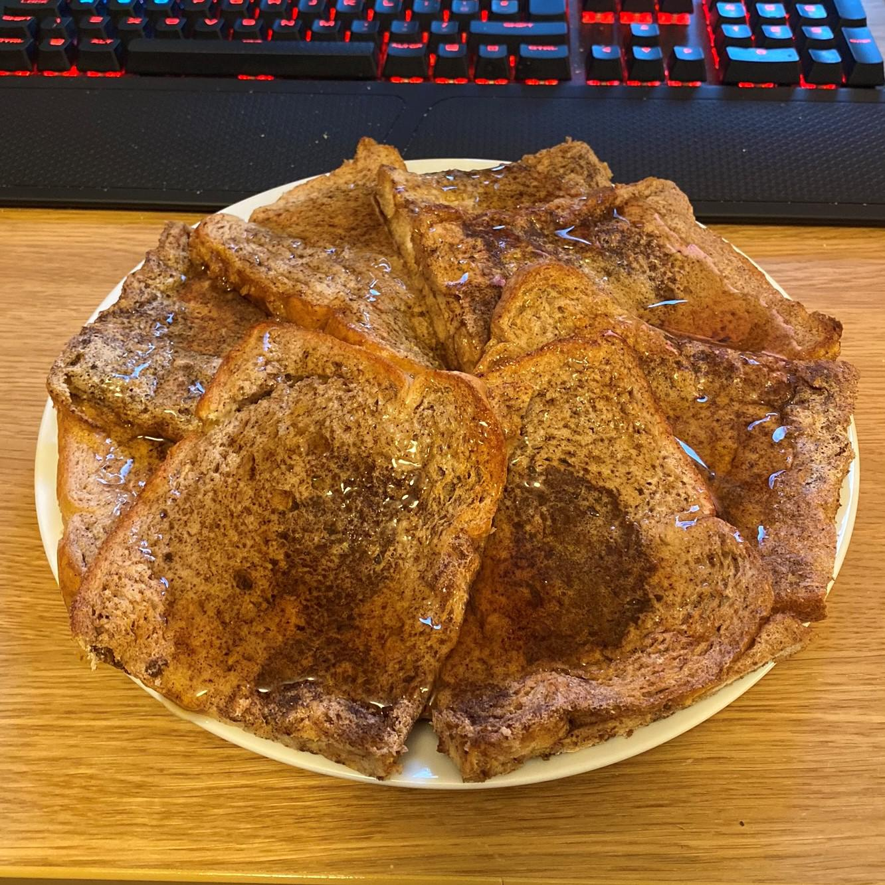

Anabolic French Toast

Anabolic french toast is the new cheat code of the diet industry - it truly is the one cheat code trainers DON'T want you to know. They hate it!!!
It's also super easy to make and can be described in just a few quick steps:
- acquire bread of choice. Plain ass white bread is good.
- Acquire bowl.
- Place egg whites, into bowl.
- Add cinnamon to flavor.
- Dip plain ass bread into egg-white mixture.
- Throw onto skillet until cooked.
- Remove from skillet.
- Enjoy!